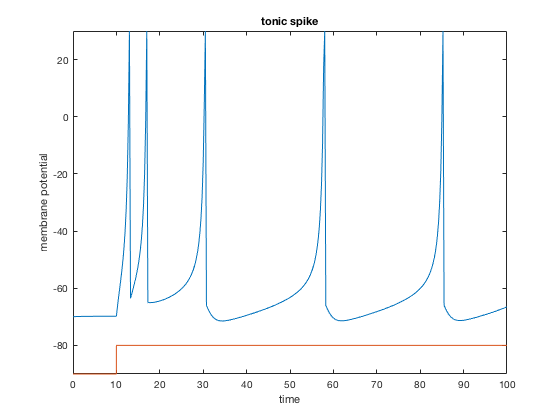

This is the readme for the model associated with the paper: Daneshzand M,Faezipour M, Barkana BD (2017) Hyperbolic Modeling of Subthalamic Nucleus cells to investigate the effect of Dopamine Depletion Computational Intelligence and Neuroscience To run the model start matlab and browse to the folder containing this archive. Type "code" on the command line and you should see this figure: 